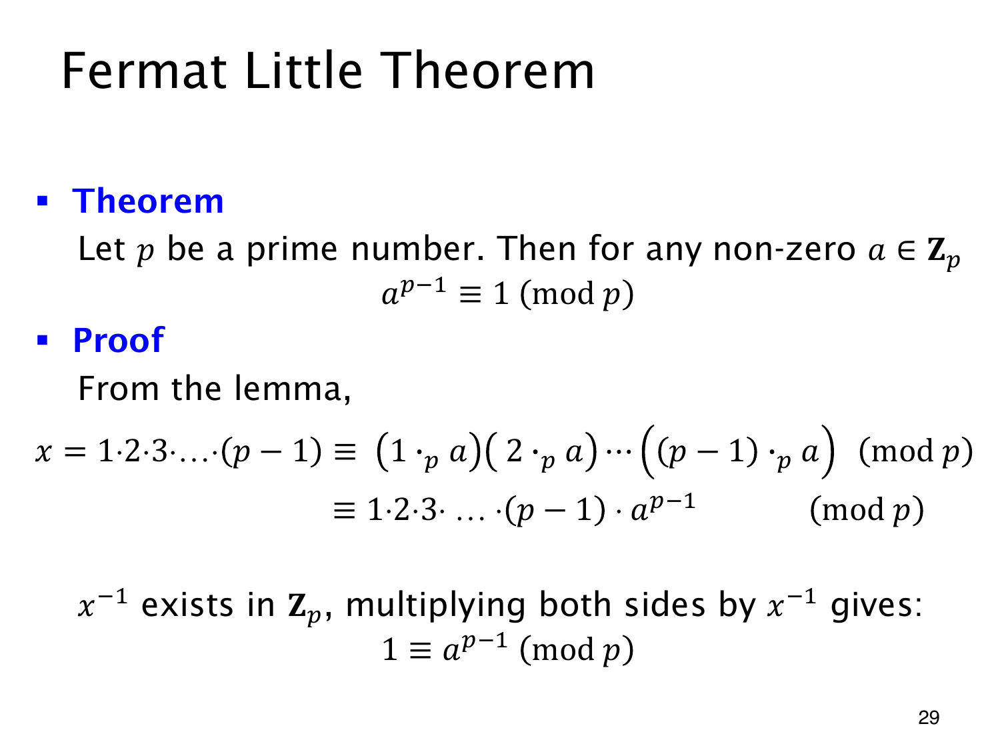

L1.14 · 第 29 页讲解原文
查看这一页课件

费马小定理的乘积证明
若 p 为素数，整数 a 不被 p 整除，则费马小定理给出
ap−1≡1(modp).
把前一个引理中的所有非零余数相乘，就能证明这个式子。记
X=1⋅2⋯(p−1).
乘以 a 只会改变非零余数的排列顺序，所以乘积模 p 不变：
X≡a(2a)⋯((p−1)a)(modp)=Xap−1(modp).
接下来要消去 X。它的每个因子都在 1 到 p−1 之间，没有一个被素数 p 整除，因此 X 模 p 非零，逆元 X−1 存在。在同余式两边乘这个逆元，便得到
1≡ap−1(modp).
“约去阶乘”实际做的是乘以它的逆元；换成合数模数时，不能未经检查就照样约去。
例如模 7 时，任意非零余数 a 都满足 a6≡1(mod7)。因此，同一个非零底数的指数若相差 6，得到的幂就同余，计算大指数时可以利用这一点。
非零条件也必须检查：若 a≡0(modp)，则 ap−1 余 0，不会余 1。把定理两边乘以 a，可以得到适用于所有整数的形式
ap≡a(modp).
当 p∣a 时，这个式子的两边都余 0，所以该情况也成立。